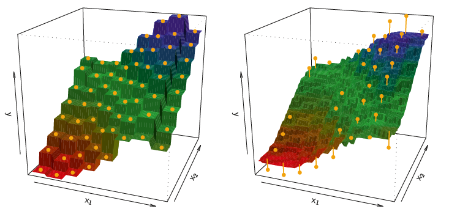
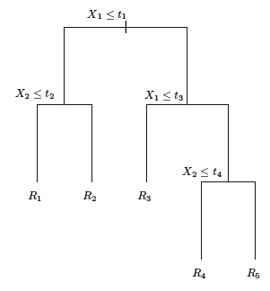
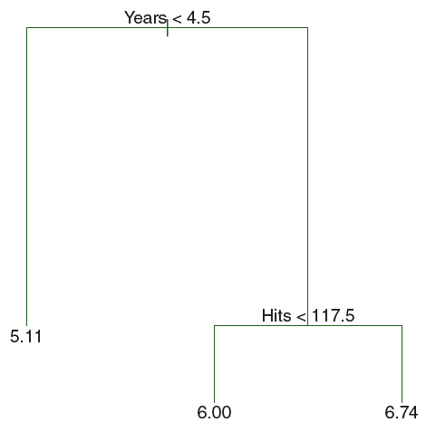
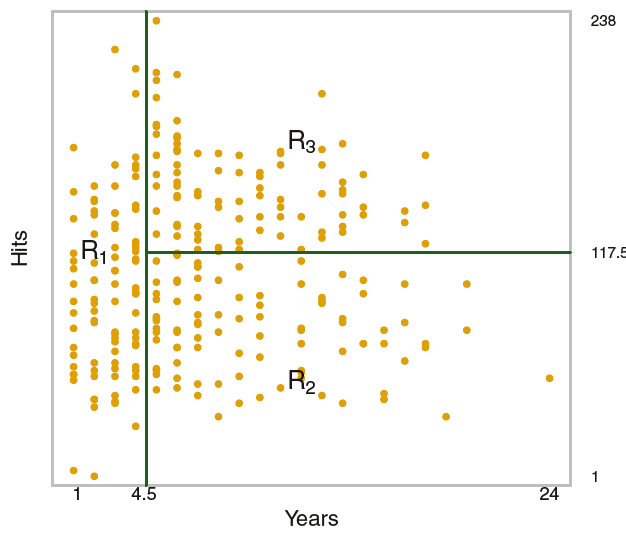

import pandas as pd
from sklearn.pipeline import Pipeline
from sklearn.neighbors import KNeighborsRegressor
from sklearn.tree import DecisionTreeRegressor15 Nonparametric Methods
15.1 Introduction
This document discusses modeling via nonparametric methods such as k-Nearest Neighbors and decision trees, and the tools in pandas and sklearn that can assist with this. We will expand on our previous content by diving deeper into model evaluation.
Note
If you do not have the sklearn library installed then you will need to run
pip install sklearn
in the Jupyter/Colab terminal to install. Remember: you only need to install once per machine (or Colab session).
15.2 Machine Learning Mission
Recall that in machine learning our goal is to predict the value of some target variable using one or more predictor variables. Mathematically, we we’re in the following setup
\[y = f(X) + \epsilon\]
where \(y\) is our target variable and \(X\) represents the collection (data frame) of our predictor variables. So far we’ve discussed tackling this via multiple linear regression. In this chapter we’ll introduce two nonparametric methods for estimating \(f\): k-Nearest Neighbors and decision trees.
Note
Nonparametric methods do not involve the estimation of parameters. For example, in multiple linear regression we needed to estimate the \(\beta\) coefficients. These were the model parameters. There are no such model parameteres for k-Nearest Neighbors and decision trees.
15.3 k-Nearest Neighbors
As we alluded to in our modeling introduction chapter, the k-Nearest Neighbors model involves looking at the observations in the training dataset closest to our new observation of interest and predicting the target value based on these closest training observations. Mathematically,
\[\hat{f}(x_0) = \frac{1}{K} \sum_{x_i \in N_0} y_i\]
where \(K\) is the number of neighboring training data points we’re interested in using to make our prediction, and \(N_0\) is the neighborhood (collection) of those \(K\) training data points.
This model is averaging the value of the target variable for the \(K\) training observations closest to the new data point of interest as our prediction. The “closest” training observations are traditionally determined using euclidean distance (i.e. normal distance).
Imagine we have predictors, \(x_1\) and \(x_2\), and some target variable, \(y\). The following visualization describes two different k-Nearest Neighbors models:

As flexible and accurate as kNN models can be, they suffer from at least the following two following characteristics:
If the dataset is large enough, then finding the closest training data points to a new observation can be computationally costly.
The model is not interpretable. There are no relationships between variables that get characterized by this model.
We will see later that kNN can also be used for classification problems!
15.4 Decision Trees
Decision trees are an extremely popular machine learning method because of their ability to capture complex relationships while also being interpretable.
The idea here is to stratify or segment the predictor space into a number of simple regions. Then use these regions of “like” observations to make predictions!
Because the set of splitting rules can be summarized in a tree, these approaches aree known as decision trees:

Suppose we want to predict Salary based on Years and Hits for baseball players:

This is a fairly simple decision tree based on two variables, but you can imagine how it would just continue down for any number of variables we wanted to include as predictors.
With respect to the data itself, this is what the decision tree model is doing:

The algorithm under the hood for fitting a decision tree creates these splits in a way that decreases the error the most at each step. That is, what variable when split next will result in the biggest reduction in error?
What would happen if we gave the model our whole training dataset and let it grow as much as it could?
Imagine a decision tree grown to the point where the bottom of the tree had a terminal node for each observation in our training dataset.
Such an overly complex decision tree often overfits our data. Because we hope to avoid overfitting we will often penalize our decision tree fitting procedure in a way that’s similar to our discussion of penalized regression! We seek to minimize the following quantity on our training data during the fitting procedure:
\[\sum_{m=1}^{|T|} \sum_{i: x_i \in R_m} (y_i - \hat{y}_{R_m})^2 + \alpha |T|\]
As mathematical as this expression is, it boils down to this: we want to minimize the error on the training set while penalizing the fitted tree for being big (i.e. the size of the tree (\(|T|\)) is large). The larger we make \(\alpha\) the more we penalize the tree for being big.
Besides setting some value for \(\alpha\), software will also allow us to specify some minimum number of observations for each terminal node as a way to control the size of the tree. In other words, instead of letting the tree grow all the way to the point where each terminal node (leaf) represents a single training observation, they will represent a collection of training observations (min_samples_leaf in sklearn). In fact, sklearn provides multiple ways to control the size of the fitted tree!
15.4.1 Advantages and Disadvantages of Decision Trees
Advantages:
Very easy to explain/interpret
May more closely mirror human decision-making than other methods like multiple linear regression
Can be displayed graphically and easily interpreted by a non-expert
Disadvantages:
Generally do not have the same level of predictive accuracy as other approaches
Can be very non-robust (i.e. small changes in the training data can cause large changes in the fit)
For these reasons, decision trees are a very popular choice for fitting in bulk (i.e. Random Forest). If we grow them to be large and fit the data very well, but do this many times then we’re able to “adjust” for the overfitting. Random forests are beyond the scope of this class, but can be pursued in future project and coursework.
We will see later that kNN can also be used for classification problems!